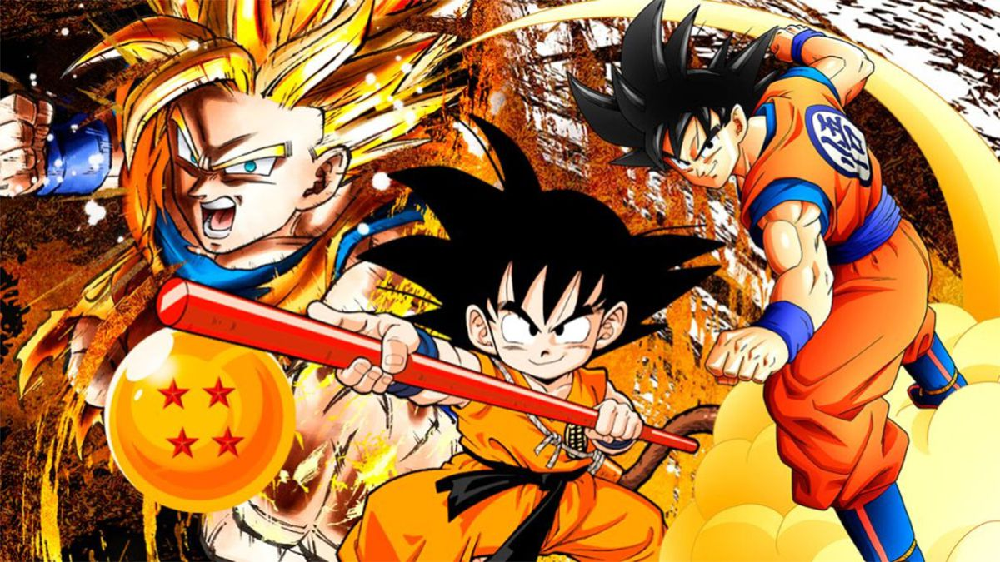

About Goku
Goku is the main character in the anime series DragonBall
Young and Matured Goku
Goku's Characteristics
- He is super strong!
- He has a lot of friends!
- He eats a lot!
Goku's Friends
Goku has a lot of friends throughout his journey. These are some of his close friends. Click on the links below to read more about them.